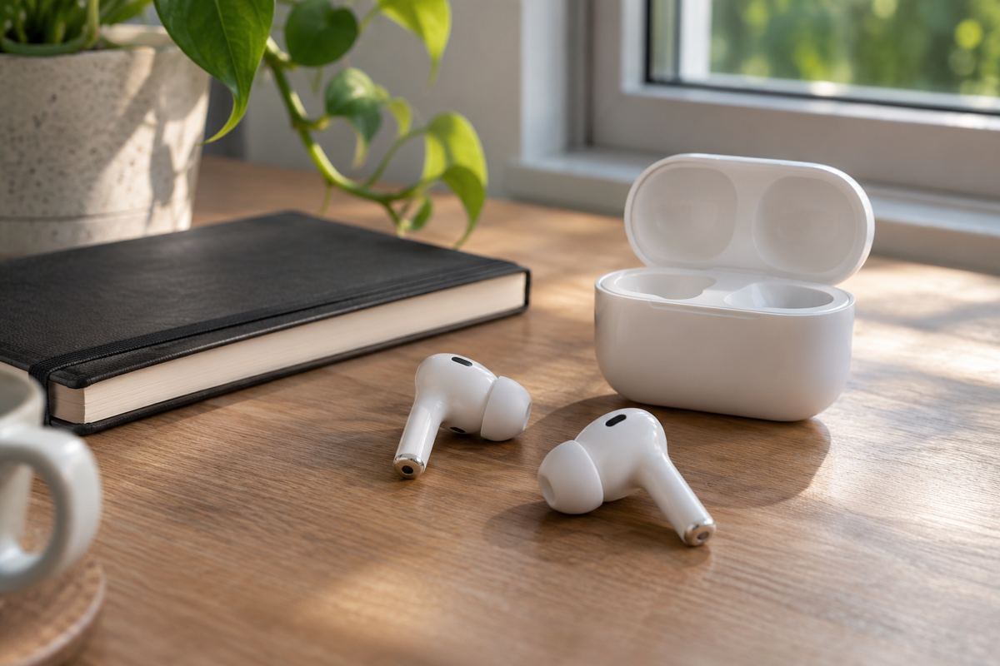

无线音频 / EXPLAINED
Moto Buds 2 Ultra加入Bose调音与手机协同翻译
11月5日发布，199欧元起分批销售，需分清8小时、含盒37小时及未来唤醒。

摩托罗拉11月5日发布Bose调音Moto Buds 2 Ultra，部分地区名Ultra 27，199欧元起未来数周分国推出，不表示全球同日或韩国价格确定。
两类驱动
11毫米动圈配独立动铁，分工不等于凭部件数证明更好听，佩戴、安装和调音仍重要，Bose名称是合作信息而非替个人偏好打分。
ANC减少噪声，通透混入外界，是不同目的。每侧三麦和语音拾取单元支援通话录音，本稿未按相同风、距离及拥挤条件比较。
翻译依赖手机
AI Live Translate需兼容Motorola及支持语言，不是任何手机独立全语种翻译。Atmos头追也需设备内容，跨系统有应用不等于功能完全一样。
Qira可在兼容手机通过左耳长按，口头唤醒则未来数月计划，不应混为已提供。头部动作、佩戴检测和双连接也要看个别条件及地区安排。
单充最多8小时、含盒37小时，不是无需充电连续37小时，ANC、通话和音量改变条件。Notebookcheck也指出公布估计的ANC状态不清楚。本文是产品公告，不是实测音质推荐，待销售、兼容和测试更明确再与自身需求比较。